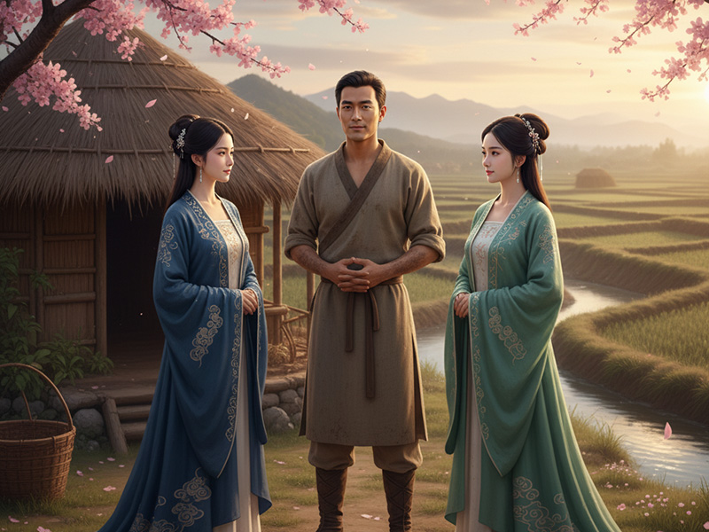

尊号
有虞氏 / 虞舜
地位
五帝之一 / 道德始祖
时代
新石器时代
形象
目有重瞳
姓氏
姚姓，名重华
都城
蒲阪
“天下明德，皆自虞舜始。” — 《史记·五帝本纪》
神祇解读

历山苦耕 · 孝感动天
舜，名重华，传说目有双瞳。他出身民间，身世坎坷，其父瞽叟顽固，后母刁顽，异母弟象骄横，三人都欲置他于死地。然而，面对家庭的迫害，舜始终恪守孝悌之道，对父母恭顺，对弟弟友爱。他的德行声名远播，无论在历山耕作，还是在雷泽捕鱼，都能以德化人，使周围的人们相互礼让，他所在之处，一年成村，二年成邑，三年成都。
尧帝试炼 · 姻结二妃
舜的贤名传到了帝尧耳中。为考察其德行与才能，尧不仅将自己的两个女儿——娥皇与女英——嫁予舜为妻，更让他掌管五典、协理百官。在家庭与政务的双重考验中，舜皆表现出色，使家庭和睦，百官信服。他历经烈火风雷而不迷，面对虎狼毒蛇而不惧，最终获得了尧的全面认可。


受禅登位 · 政通人和
尧去世后，舜正式登临帝位。他举贤任能，启用“八元”、“八恺”等贤才，流放了共工、驩兜等“四凶”。他任命禹治理水利，后稷掌管农业，契推行教化，皋陶执掌刑法，开创了政通人和、百业兴旺的太平局面。晚年，他效法尧，将帝位禅让于治水有功的大禹，自己则南巡天下，最终逝于苍梧之野。
人文之功
❤️
孝感动天
面对家庭的极度迫害，仍坚守孝道，成为中华伦理道德的最高典范，被列为“二十四孝”之首。
👥
举贤任能
重用大禹、皋陶、契、后稷等贤臣，使其各司其职，奠定了国家治理的基础。
⚖️
放逐四凶
坚决惩处奸佞，将浑敦、穷奇、梼杌、饕餮四个恶名昭彰的部族流放，清明政治。
🏛️
完善官制
明确划分百官职责，设立三年一考核的制度，极大提升了行政效率与国家治理水平。
🏺
善于制陶
精于制陶技艺，并且带动河滨一带的陶工精益求精，杜绝粗制滥造，促进了手工业的发展。
神祇谱系
解大为的笔记：“如果说尧将‘道德’请上了王座，那么舜就是第一个用自己的血肉之躯去承受这顶王冠重量的人。他的神性并非来源于天赋或血脉，而是从人世间最极致的苦难与恶意中淬炼而出的。他的故事是一场漫长的试炼，敌人不是洪水猛兽，而是来自至亲的憎恨。舜证明了一个颠覆性的宇宙法则：最强大的力量，不是改造世界，而是战胜内心。他不是神降临为人，而是人修行成圣，是立维宇宙中道德力量的最终极体现。”